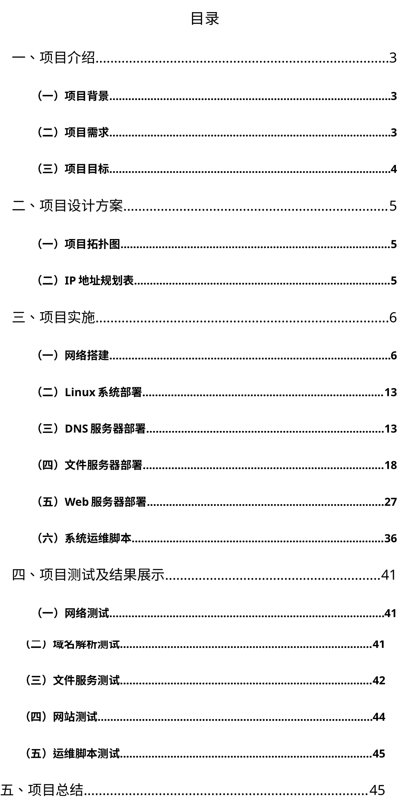
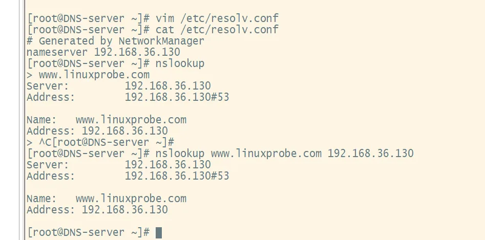
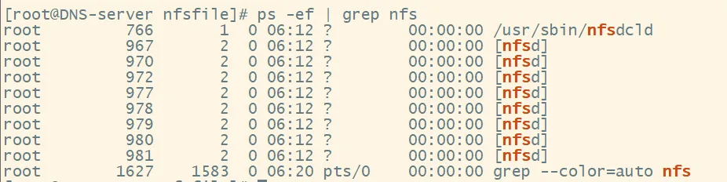
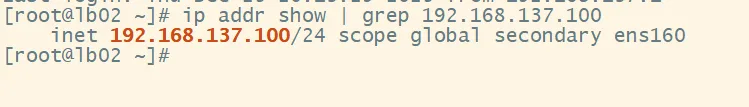

企业网络系统规划与建设实施
一次完整的企业网交付：先做园区网络（VLAN 规划、生成树、网关冗余、地址自动分配），再用防火墙划分安全域、做 NAT 与访问控制，最后在 Linux 上把 DNS、文件服务、网站和运维脚本一整套服务立起来。这个项目的完整版复盘我写成了博客文章：企业网络实训复盘：从 VLAN 规划到防火墙安全策略；这一页放报告目录、关键截图和一段简版复盘，作为"45 页报告"的证据。
报告目录与结构

| 部分 | 内容 | 页码 |
|---|---|---|
| 一、项目介绍 | 背景、需求、目标 | 3–4 |
| 二、项目设计方案 | 项目拓扑图、IP 地址规划表 | 5 |
| 三、项目实施 | 网络搭建（6–12）；Linux 系统部署（13）；DNS 服务器部署（13–17）；文件服务器部署（18–26）；Web 服务器部署（27–35）；系统运维脚本（36–40） | 6–40 |
| 四、项目测试及结果展示 | 网络测试、域名解析测试、文件服务测试、网站测试、运维脚本测试 | 41–45 |
| 五、项目总结 | 收获与不足 | 45 |
关键截图





复盘：我做了什么、卡在哪、怎么解的
做了什么。分三层推进：网络层按部门与功能划 VLAN，MSTP 防环、VRRP 做双网关冗余、DHCP 自动分配地址，出口 USG 防火墙划分 trust / untrust 安全域并配安全策略与 NAT；服务层在 Linux 上部署主从 DNS（正反向解析 + 区域同步）、文件服务全家桶（FTP 三种认证模式、Samba、NFS）、Nginx 反向代理加 LAMP 动态站，并用 Keepalived 做双机热备；最后写了两个运维脚本——服务自愈（检测到 Nginx 停止自动重启）和 LAMP 一键部署。五组测试（网络 / 域名解析 / 文件服务 / 网站 / 运维脚本）逐项留了结果。
卡点一：DNS 是两层坑。第一层是 named.conf 的默认口径：listen-on 只听 127.0.0.1、allow-query 只允许 localhost，结果本机解析一切正常、别的机器全军覆没——报告里原样记了这两行从默认值改成 any 的过程。第二层是区域文件的准确性：正反向区域文件里的 SOA、序列号和每条记录都得对得上，主从同步靠序列号递增触发，文件写错一处，从服务器同步过来的就是错的。这一章让我对"配置即契约"有了实感。
卡点二：防火墙策略要精细调整。分了安全域之后，所有跨域访问都变成逐条放行：范围给大了等于没分域，给小了服务就过不去。调试方法是分段定位——先在内网把服务本身测通，再过一遍防火墙测，确认问题出在策略而不是服务；策略按"最小放行"逐条加，每加一条就复测一次。这也是报告总结里我写下的三个挑战之一。
卡点三：Keepalived 切换必须实测。主备都显示进程在跑，不等于切换真的可用。验证方法是硬停主节点的 Keepalived，再到备机上 ip addr 确认 VIP（192.168.137.100）以 secondary 地址出现、前端访问不中断（见上方截图）。另外还配了服务自愈脚本做第二层兜底：进程级故障先自愈，节点级故障再漂移。
一句话总结。企业网交付的特点是牵一发动全身：网络、安全、服务三层互相咬合，唯一的办法是按层施工、逐项测试、每一步都留证据。
关于完整报告
完整报告包含实验环境的地址规划与设备配置全文，不在网上公开。需要查阅的话，可以在面试时当面屏幕共享展示；也可以先通过关于我页面的邮箱联系我说明用途。
另一个项目详情：企业云数据中心运维实训（84 页报告）
最后更新于 2026-10-31